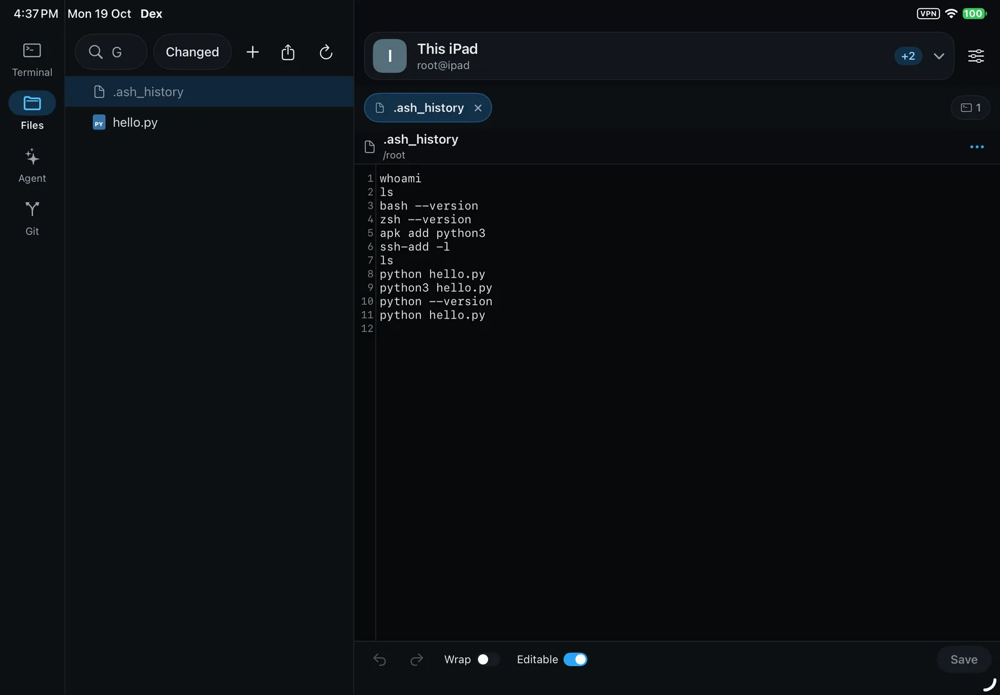
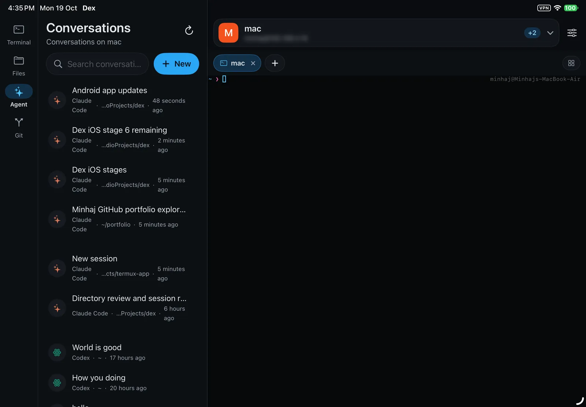
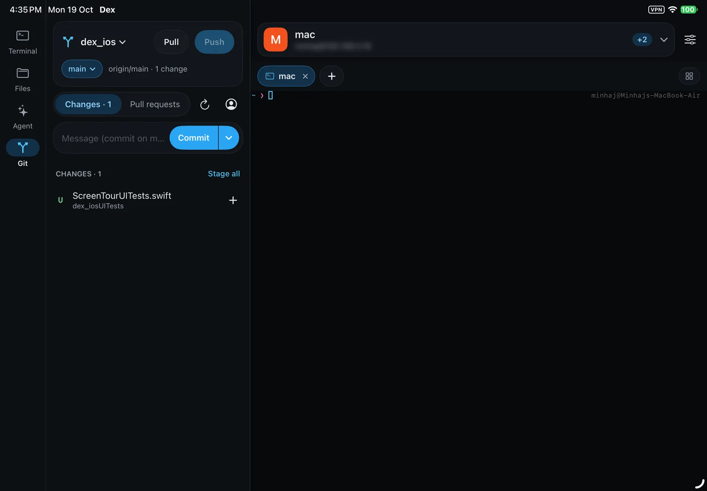

Coding in your pocket.
Terminals, files, Git, GitHub pull requests and the coding agent of your choice, on your own computers over SSH: your Mac, a Linux server, or a machine in the cloud.
Laid out for one thumb. Tabs at the bottom, what's open in each tab in a strip above them, and the machine you're on as a chip at the top.
- Open a terminal on your computer.
- Tap it to type. Extra keys add Esc, Ctrl, Tab and the arrows.
- Commands run there, not on the phone.
- It keeps running while you're away.
- Every conversation on your computer, in one list.
- Start a chat with Claude Code or Codex. Dex installs one that's missing.
- Ask for something, like a Kelvin option.
- Claude Code works on your computer, live.
- Then it tells you what it changed.
- Every file of the project, with its Git status.
- Open one to read or edit it.
- With syntax highlighting, undo and redo.
- What changed, ready to stage, commit and push.
- Tap a file to see its diff.
Your machines, from your pocket
Add your Mac or servers with a key or a password, and they open as workspaces. Any number of SSH hosts stay connected at once, and you switch between them from the chip at the top.
- One shared SSH connection per host, so files, Git and the agent never ask you to log in twice.
- Terminals and agent chats keep running on the host when the connection drops, and open on your other devices too.
- Saved passwords, and SSH keys made in the app, behind your fingerprint.
- A command palette, and a switcher for everything open across every tab.
The agent of your choice, already on your machine
Claude Code or Codex, running on the machine the workspace is on, reached from the phone in your hand. A new chat asks which agent to use, and offers to install one that is missing.
- Each chat keeps its own agent, model, effort and permission mode.
- One list of every conversation, newest first, marked by agent.
- A notification the moment an agent finishes or needs you, wherever you are.
- Unseen updates counted on the tab. Tap one to open the chat.
Not only phones
On tablets, Samsung DeX and the iPad, Dex spreads out like a desktop IDE: files, Git or agent chats in a side panel, with your work beside them.


